Box-pleat crease patterns after pleat reassignment
The crease set is identical to what the compiler produced before this
work — same vertices, same edges, same count of folded creases. Only which creases are
mountains and which are valleys has moved. Amber highlights every crease whose label
changed, so the repair is visible rather than something you have to diff by eye.
M (mountain)
V (valley)
paper edge
label flipped by the search
| subject | grid N | creases | flipped | candidates | faces | closure | secs |
|---|
starfish | 4 | 55 | 0 | 1 | 38 | 2.2e-16 | 0.1 |
bird | 54 | 184 | 0 | 1 | 104 | 1.9e-15 | 5.8 |
lizard | 34 | 27 | 13 | 9 | 20 | 2.5e-16 | 8.1 |
horse | 46 | 307 | 56 | 5 | 166 | 9.0e-16 | 15.1 |
octopus | 74 | 257 | 10 | 2 | 144 | 2.2e-15 | 59.8 |
frog | 38 | 43 | 15 | 22 | 28 | 3.5e-16 | 59.6 |
guinea_pig | 64 | 43 | 15 | 20 | 28 | 4.6e-16 | 295.2 |
dog | 74 | 569 | 129 | 10 | 298 | 2.6e-15 | 578.0 |
starfish
accepted on the first candidate — this one was already consistent, so nothing moved · grid 4×4 · 55 creases (25 M / 30 V) · 38 faces · closure 2.2e-16
Crease pattern
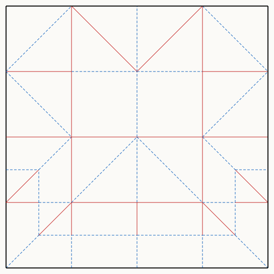
Flat-folded base
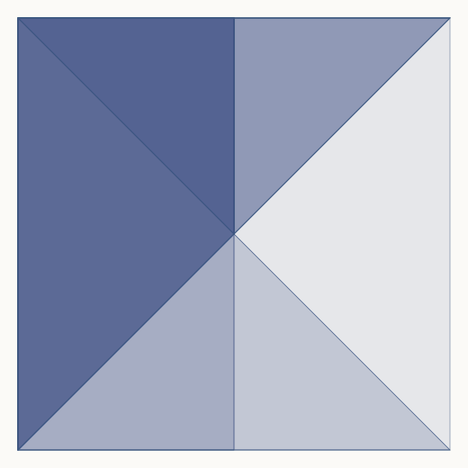
bird
accepted on the first candidate — this one was already consistent, so nothing moved · grid 54×54 · 184 creases (93 M / 91 V) · 104 faces · closure 1.9e-15
Crease pattern
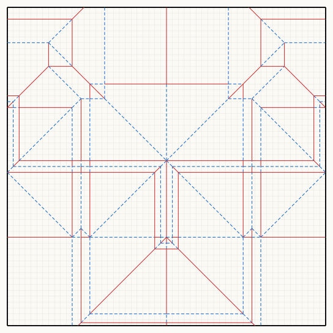
Flat-folded base
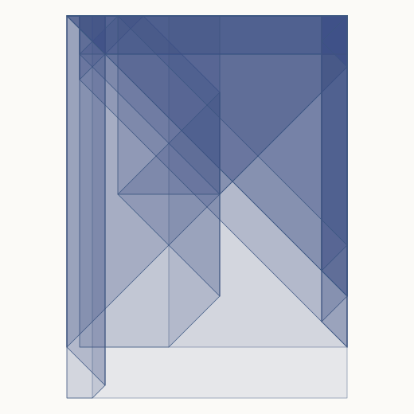
lizard
13 of 27 creases relabelled over 9 candidate labellings · grid 34×34 · 27 creases (11 M / 16 V) · 20 faces · closure 2.5e-16
Crease pattern
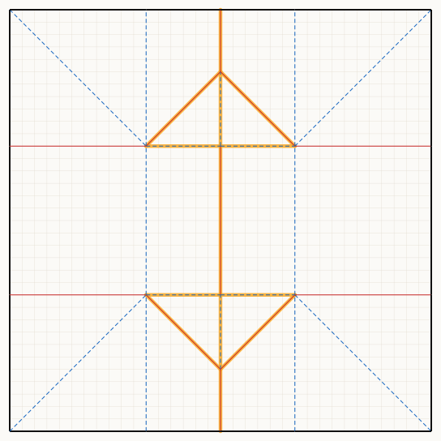
Flat-folded base
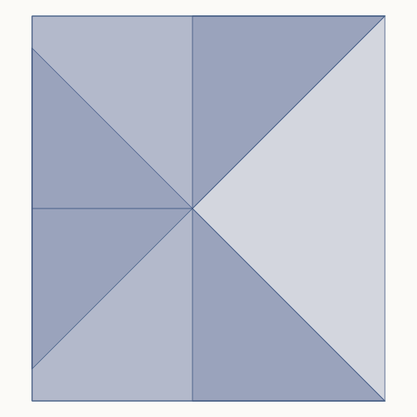
horse
56 of 307 creases relabelled over 5 candidate labellings · grid 46×46 · 307 creases (153 M / 154 V) · 166 faces · closure 9.0e-16
Crease pattern
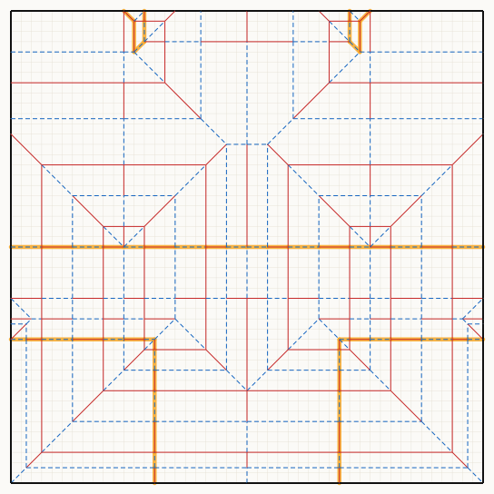
Flat-folded base
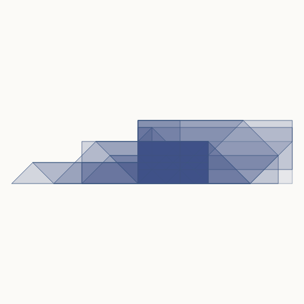
octopus
10 of 257 creases relabelled over 2 candidate labellings · grid 74×74 · 257 creases (132 M / 125 V) · 144 faces · closure 2.2e-15
Crease pattern
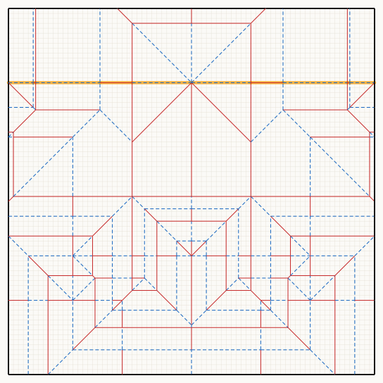
Flat-folded base
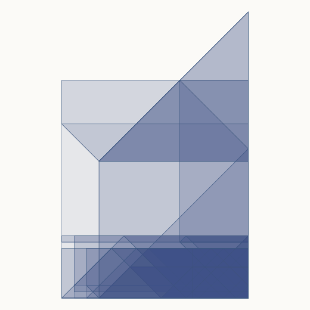
frog
15 of 43 creases relabelled over 22 candidate labellings · grid 38×38 · 43 creases (19 M / 24 V) · 28 faces · closure 3.5e-16
Crease pattern
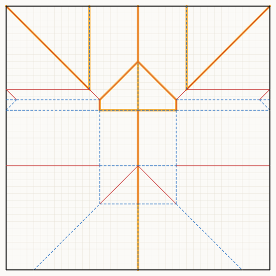
Flat-folded base
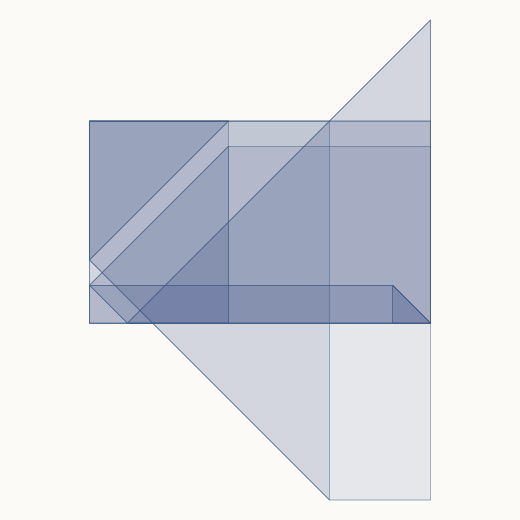
guinea_pig
15 of 43 creases relabelled over 20 candidate labellings · grid 64×64 · 43 creases (19 M / 24 V) · 28 faces · closure 4.6e-16
Crease pattern
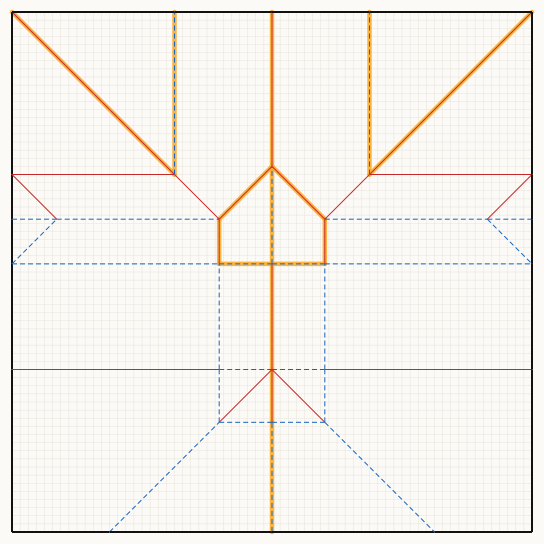
Flat-folded base
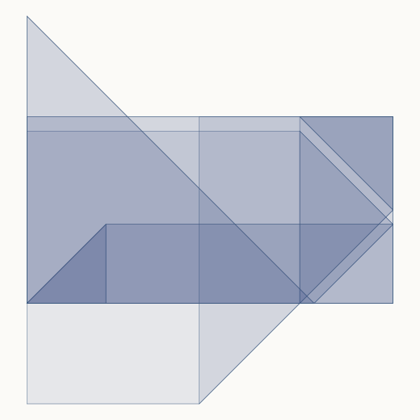
dog
129 of 569 creases relabelled over 10 candidate labellings · grid 74×74 · 569 creases (286 M / 283 V) · 298 faces · closure 2.6e-15
Crease pattern
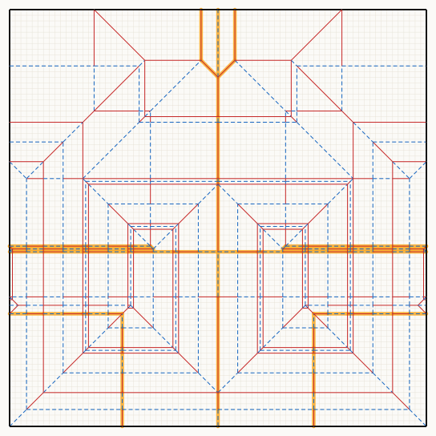
Flat-folded base
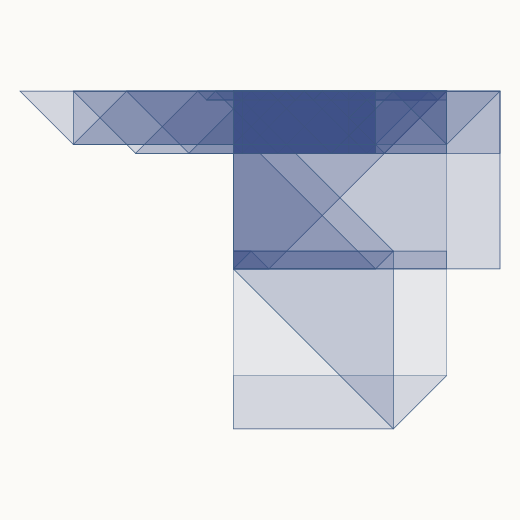